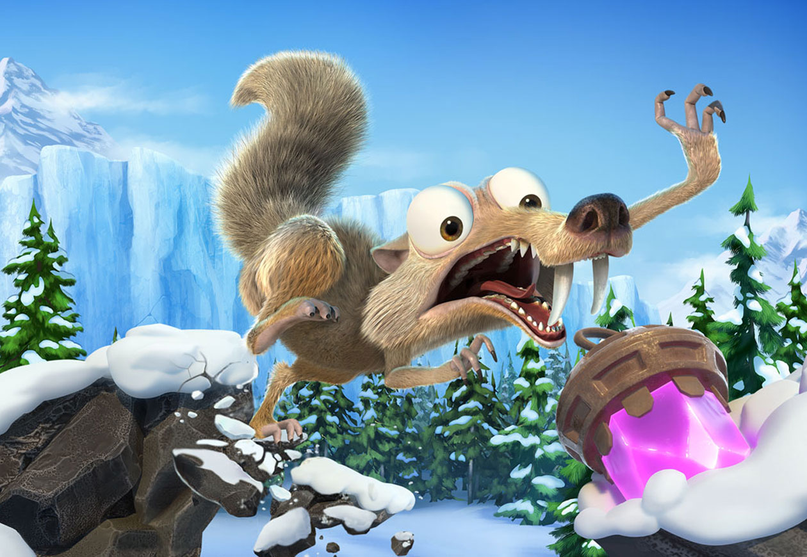
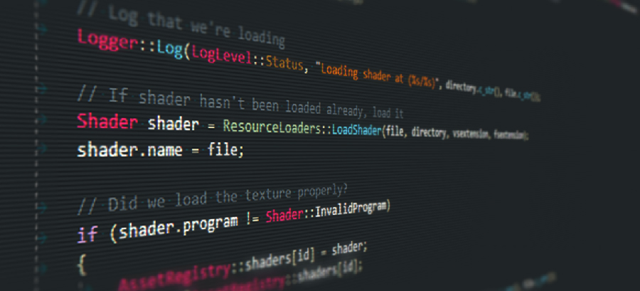

Hi, I'm Jak Barnes!
I'm a C++/C# programmer, currently
working at Radical Forge.
I enjoy playing games, writing code & love to tinker! I'm also an amateur musician 🥁 & photographer 📷
Commercial Games
Sea of Thieves a pirate simulator

I'm currently working on Sea of Thieves, Rare's freeform buccaneering "pirate experience". Details of my work on this are being kept under wraps (for now!).
✂️
Spaceteam VR a chaotic, cooperative party game

Released on all major VR platforms. I worked on almost every aspect of the game, including Gameplay, AI, Tools, Systems & Localisation.
✂️
{kind=link}
Ice Age: Scrat's Nutty Adventure a 3D platformer

I implemented a bunch of core gameplay features, with a heavy focus on AI.
✂️
New Star Manager a mobile football management game

A football management game for mobile, released in 2018. I worked on integrating 3rd party SDKs and core engine functionality.
Hobby Projects
PICOPSP a PICO-8 emulator for Sony PSP
A small proof of concept for getting PICO-8 to run on a PSP.
✂️
Crawler an approachable roguelike
A more user-friendly, less ugly approach to the classic roguelike formula intended for mobile.
✂️
Moss a custom
C++ game engine 
A cross-platform
C++ 2D/3D game engine written using modern C++ utilising open source libraries. Game Jams
lo–fi beats to find objects to a comfy found-object game

A weekend long submission for the 2021 Global Game Jam. The theme was "Lost & Found".
✂️
Snaaake! a chaotic Snake clone
My entry for the 2020 GMTK Game Jam; the theme was "Out of Control".
✂️
Bong! a chaotic Pong clone
My entry for the 2019 GMTK Game Jam; the theme was "Only One".
Open Source
rnet a
raylib networking module rnet is a simple and easy-to-use networking module for raylib written in C99
(raylib is a simple and easy-to-use library to enjoy videogames programming).
Personal
Photography

I'm also an amateur photographer. I love to get lost in local parks spending the whole day taking pictures of the plants, trees & wildlife.
In fact, all the photos on this page were taken by me!
I use a Canon EOS 550D with 2 lenses:
- Canon EF-S 18-55mm f/3.5-5.6 III
- Sigma 70-300mm f/4-5.6 DG Macro
✂️
That's it!
If any of this caught your eye, drop me a message on twitter, or you can email me
Thanks for reading! 😊